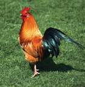
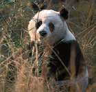
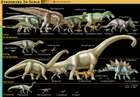
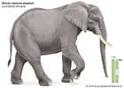

-
Rabbit
any of 29 species of long-eared mammals belonging to the family Leporidae, excluding hares (genus Lepus). Frequently the
terms rabbit and hare are used interchangeably, a practice that can cause confusion. Jackrabbits,
for instance, are actually hares, whereas the rockhares and the hispid…
-
Peacock
any of three species of resplendent birds of the pheasant family, Phasianidae (order Galliformes). Strictly, the male is
a peacock, and the female is a peahen; both are peafowl. The two most-recognizable species of peafowl
are the blue, or Indian, peacock (Pavo cristatus), of India and Sri…
-
Reindeer
(Rangifer tarandus), species of deer (family Cervidae) found in the Arctic tundra and adjacent boreal forests of Greenland,
Scandinavia, Russia, Alaska, and Canada. Reindeer have been domesticated in Europe. There are two
varieties, or ecotypes: tundra reindeer and forest (or woodland)…
-

Chicken
Chicken, (Gallus gallus), any of more than 60 breeds of medium-sized poultry that are primarily descended from the wild red
jungle fowl (Gallus gallus, family Phasianidae, order Galliformes) of India. The chicken is perhaps
the most widely domesticated fowl, raised worldwide for its meat and eggs.…
-
Lion (Panthera leo), large, powerfully built cat (family Felidae) that is second in size only
to the tiger. The proverbial “king of beasts,” the lion has been one of the best-known wild animals
since earliest times.
-
Dog (Canis lupus familiaris), domestic mammal of the family Canidae (order Carnivora). It is
a subspecies of the gray wolf (Canis lupus) and is related to foxes and jackals. The dog is one of
the two most ubiquitous and most popular domestic animals in the world (the cat is the other). For
more…
-

Giant panda (Ailuropoda melanoleuca) feeding in a bamboo forest, Sichuan (Szechwan) province,
China. Giant panda Giant panda, (Ailuropoda melanoleuca), bearlike mammal inhabiting bamboo forests
in the mountains of central China. Its striking coat of black and white, combined with a bulky body
and round face, gives it a captivating appearance that has endeared it to people worldwide. According
to the IUCN Red…
-

Dinosaur the common name given to a group of reptiles, often very large, that first appeared
roughly 245 million years ago (near the beginning of the Middle Triassic Epoch) and thrived worldwide
for nearly 180 million years. Most died out by the end of the Cretaceous Period, about 66 million
years…
-
Labrador retriever breed of sporting dog that originated in Newfoundland and was brought to England
by fishermen about 1800. It is an outstanding gun dog, consistently dominating field trials. Standing
21.5 to 24.5 inches (55 to 62 cm) and weighing 55 to 80 pounds (25 to 36 kg), it is more solidly…
-

Elephant
(family Elephantidae), largest living land animal, characterized by its long trunk (elongated upper lip and nose), columnar
legs, and huge head with temporal glands and wide, flat ears. Elephants are grayish to brown in colour,
and their body hair is sparse and coarse. They are found most…
-
Hummingbird any of about 320 species of small, often brightly coloured birds of the family Trochilidae,
usually placed with the swifts in the order Apodiformes but sometimes separated in their own order,
Trochiliformes. The brilliant, glittering colours and elaborately specialized feathers of many…
-
Polar bear
(Ursus maritimus), great white northern bear (family Ursidae) found throughout the Arctic region. The polar bear travels
long distances over vast desolate expanses, generally on drifting oceanic ice floes, searching for
seals, its primary prey. Except for one subspecies of grizzly bear,…
-
Horse
(Equus caballus), a hoofed, herbivorous mammal of the family Equidae. It comprises a single species, Equus caballus, whose
numerous varieties are called breeds. Before the advent of mechanized vehicles, the horse was widely
used as a draft animal, and riding on horseback was one of the chief…
-
Bird
(class Aves), any of the more than 10,400 living species unique in having feathers, the major characteristic that distinguishes
them from all other animals. A more-elaborate definition would note that they are warm-blooded vertebrates
more related to reptiles than to mammals and that they…
-
Cheetah
(Acinonyx jubatus), one of the world’s most-recognizable cats, known especially for its speed. Cheetahs’ sprints have been
measured at a maximum of 114 km (71 miles) per hour, and they routinely reach velocities of 80–100
km per hour while pursuing prey. Nearly all the cheetahs remaining…
-
Flamingo
(order Phoenicopteriformes), any of six species of tall, pink wading birds with thick downturned bills. Flamingos have slender
legs, long, graceful necks, large wings, and short tails. They range from about 90 to 150 cm (3 to
5 feet) tall. Flamingos are highly gregarious birds. Flocks…
-
Tilapia
common name used for certain species of fishes belonging to the family Cichlidae (order Perciformes), represented by numerous,
mostly freshwater species native to Africa. Tilapias are perhaps best known because of their potential
as an easily raised and harvested food fish. Their…
-
Goldfish
(Carassius auratus), ornamental aquarium and pond fish of the carp family (Cyprinidae) native to East Asia but introduced
into many other areas. The goldfish resembles the carp (Cyprinus carpio) but differs from its relative
in having no mouth barbels. It was domesticated by the Chinese…
 Lion (Panthera leo), large, powerfully built cat (family Felidae) that is second in size only to the tiger. The proverbial “king of beasts,” the lion has been one of the best-known wild animals since earliest times.
Lion (Panthera leo), large, powerfully built cat (family Felidae) that is second in size only to the tiger. The proverbial “king of beasts,” the lion has been one of the best-known wild animals since earliest times. Dog (Canis lupus familiaris), domestic mammal of the family Canidae (order Carnivora). It is a subspecies of the gray wolf (Canis lupus) and is related to foxes and jackals. The dog is one of the two most ubiquitous and most popular domestic animals in the world (the cat is the other). For more…
Dog (Canis lupus familiaris), domestic mammal of the family Canidae (order Carnivora). It is a subspecies of the gray wolf (Canis lupus) and is related to foxes and jackals. The dog is one of the two most ubiquitous and most popular domestic animals in the world (the cat is the other). For more… Bird (class Aves), any of the more than 10,400 living species unique in having feathers, the major characteristic that distinguishes them from all other animals. A more-elaborate definition would note that they are warm-blooded vertebrates more related to reptiles than to mammals and that they…
Bird (class Aves), any of the more than 10,400 living species unique in having feathers, the major characteristic that distinguishes them from all other animals. A more-elaborate definition would note that they are warm-blooded vertebrates more related to reptiles than to mammals and that they… Flamingo (order Phoenicopteriformes), any of six species of tall, pink wading birds with thick downturned bills. Flamingos have slender legs, long, graceful necks, large wings, and short tails. They range from about 90 to 150 cm (3 to 5 feet) tall. Flamingos are highly gregarious birds. Flocks…
Flamingo (order Phoenicopteriformes), any of six species of tall, pink wading birds with thick downturned bills. Flamingos have slender legs, long, graceful necks, large wings, and short tails. They range from about 90 to 150 cm (3 to 5 feet) tall. Flamingos are highly gregarious birds. Flocks…